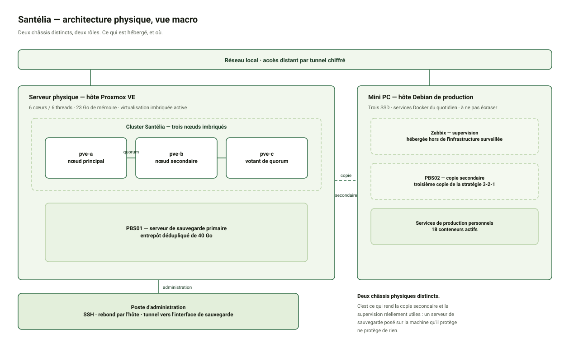
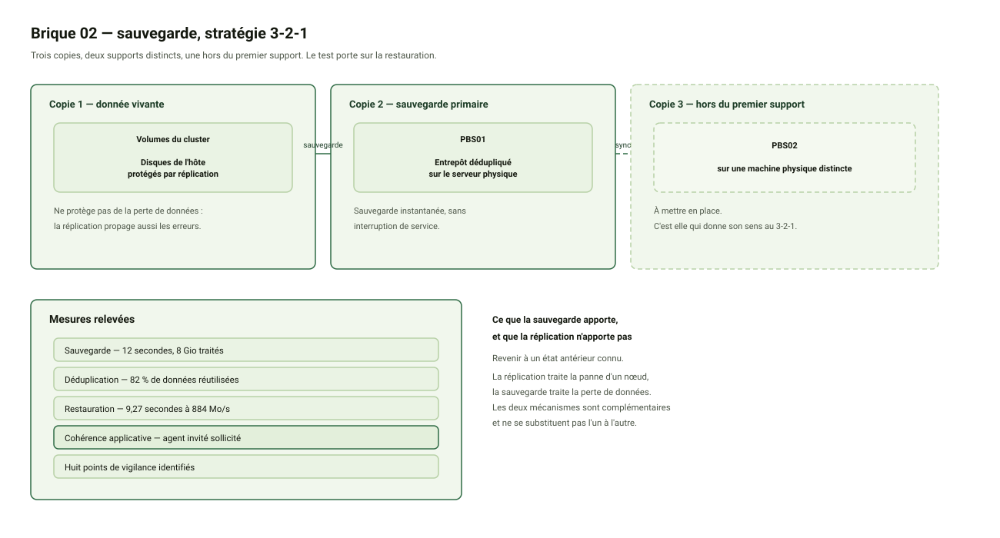

Brique 02 — Proxmox Backup Server. Stratégie de copie et restauration testée. Mise à jour : 08/10/2026
1. Objet
Le cahier des charges identifie la sauvegarde comme le second besoin du projet : centraliser les sauvegardes, prévoir une copie secondaire, et permettre la restauration des données.
Le test de recette associé consiste à lancer une sauvegarde puis à tester une restauration, avec pour preuves le journal de sauvegarde et la preuve de restauration.
Un point de vocabulaire à poser d’emblée, parce qu’il prête à confusion : cette brique ne traite pas la continuité de service. Celle-ci relève de la haute disponibilité, qui permet à une machine de redémarrer ailleurs. La sauvegarde répond à une question différente : comment revenir à un état antérieur connu.
2. Architecture retenue

2.1 Le principe 3-2-1
| Copie | Emplacement | Support | Rôle |
|---|---|---|---|
| 1 | Volumes du cluster | Disques de l’hôte | Donnée vivante, protégée par réplication entre nœuds |
| 2 | Serveur de sauvegarde | Machine dédiée sur l’hôte | Sauvegarde primaire, dédupliquée |
| 3 | Copie secondaire | Machine physique distincte | Copie hors du premier support |
Le point qui fait la différence : un serveur de sauvegarde installé sur la machine qu’il protège ne protège de rien. Si l’hôte tombe, la donnée et sa sauvegarde disparaissent ensemble. C’est ce qui justifie la troisième copie sur une machine distincte.

2.2 Sauvegarde et réplication : deux besoins distincts
La réplication entre nœuds apporte de la disponibilité. Elle ne protège pas de la perte de données, car elle réplique aussi les erreurs : une suppression ou une corruption se propage d’un nœud à l’autre.
La sauvegarde répond à un autre besoin, celui de revenir à un état antérieur connu. Les deux mécanismes sont complémentaires et ne se substituent pas l’un à l’autre.
2.3 Deux niveaux de virtualisation, deux périmètres
L’infrastructure comporte deux couches d’hyperviseurs : l’hôte physique d’un côté, et le cluster de trois nœuds qu’il héberge de l’autre. Chacune dispose de sa propre base de configuration et de sa propre liste de stockages.
Conséquence pratique : un stockage déclaré au niveau de l’hôte n’est pas visible depuis le cluster, et inversement. Cette distinction a provoqué une erreur lors de la mise en œuvre, traitée au point de vigilance n° 5.
3. Mise en œuvre
3.1 Récupération et contrôle de l’image
Version retenue : Proxmox Backup Server 4.2-1.
| Étape | Opération |
|---|---|
| Téléchargement | Récupération de l’image depuis les dépôts officiels |
| Contrôle d’intégrité | Comparaison de l’empreinte de la somme de contrôle avec la valeur publiée |
| Résultat | Empreintes identiques — fichier conforme et non altéré |
Le téléchargement a échoué à la première tentative : le certificat présenté par le serveur de distribution ne correspondait pas au nom de domaine demandé. La vérification a dû être désactivée pour permettre l’opération, ce qui supprime la garantie d’origine du fichier. D’où le contrôle systématique de l’empreinte avant toute utilisation.
3.2 Machine dédiée
| Élément | Valeur | Justification |
|---|---|---|
| Processeurs virtuels | 2 | Traitements de déduplication en tâche de fond |
| Mémoire | 2048 Mo | Cache de déduplication |
| Disque système | 20 Go | Système et application |
| Disque de données | 40 Go | Entrepôt de sauvegarde |
Deux choix d’architecture. Une machine virtuelle plutôt qu’un conteneur, car l’application nécessite un accès direct au stockage. Et le disque de données est ajouté après l’installation : l’installateur ne dispose ainsi que d’un seul disque, ce qui supprime toute ambiguïté sur le disque à préparer.
3.3 Protection du stockage alloué
L’allocation du premier disque a émis un avertissement : la protection contre la saturation du stockage allégé n’était pas active.
| Paramètre | Valeur appliquée | Valeur par défaut | Objet |
|---|---|---|---|
| Seuil de déclenchement | 80 % | 100 % (protection inactive) | Déclenche l’extension avant la saturation |
| Pourcentage d’extension | 10 % | 20 % | Volume ajouté à chaque déclenchement |
| Démon de surveillance | En cours d’exécution | — | Déclenche effectivement l’extension |
Le pourcentage s’applique à la taille du pool et non à l’espace libre du groupe de volumes.
| Élément | Valeur |
|---|---|
| Taille du pool | 141,23 Gio |
| Extension demandée à 20 % | ~28,2 Gio |
| Espace libre du groupe de volumes | 16,00 Gio |
| Extension demandée à 10 % | ~14,1 Gio |
Un réglage à 20 % aurait demandé 28 Gio pour 16 disponibles : l’extension aurait échoué sans message d’erreur, en laissant croire à une protection effective.
Preuve de la correction : l’avertissement apparaissait lors de la création du premier disque, il a disparu lors de la création du second.
3.4 Compte de service et confiance
Principe appliqué : moindre privilège. L’hyperviseur ne dispose que des droits nécessaires sur cet entrepôt, et d’aucun droit d’administration du serveur.
| Élément | Valeur |
|---|---|
| Compte | Compte de service dédié |
| Chemin d’application | Sur l’entrepôt uniquement |
| Rôles | Écriture des sauvegardes et lecture pour restauration |
La connexion est en outre authentifiée par l’empreinte du certificat du serveur. Cette empreinte est comparée à celle présentée lors du raccordement : sans ce contrôle, une interception réseau pourrait rediriger les sauvegardes vers un serveur tiers, qui les accepterait sans difficulté.
Réserve : l’empreinte change si le certificat est régénéré, notamment en cas de modification du nom de machine. Le raccordement doit alors être refait.
3.5 Raccordement du cluster
Le stockage a d’abord été déclaré au niveau de l’hôte physique. Ce dernier ne faisant pas partie du cluster, la sauvegarde des machines applicatives était impossible : le stockage n’existait pas du point de vue des nœuds. Déclaration corrigée au niveau du cluster, le stockage devenant visible sur les trois nœuds.
Le contrôle de l’état du stockage valide simultanément quatre éléments : la connectivité réseau, l’authentification du compte, l’adéquation des permissions et la conformité de l’empreinte du certificat.
3.6 Sauvegarde en mode instantané
Sauvegarde exécutée sans interruption de service, sur la machine critique.
| Indicateur | Valeur |
|---|---|
| Statut | Terminée avec succès |
| Durée | 12 secondes |
| Données traitées | 8 Gio |
| Débit | 745 Mio/s |
| Données creuses | 6,47 Gio (80 %) |
| Données réutilisées | 6,59 Gio (82 %) |
Point notable : le journal mentionne l’appel à l’agent invité pour geler puis libérer le système de fichiers avant et après la capture. Sans cet agent, la sauvegarde resterait utilisable mais serait seulement « cohérente à l’arraché », comparable à un arrêt brutal. Sa présence garantit une sauvegarde cohérente applicative, condition d’une restauration fiable.
3.7 Restauration vers une machine distincte
La restauration a été faite vers un identifiant de machine différent, afin de préserver l’originale et de permettre la comparaison.
| Indicateur | Valeur |
|---|---|
| Données restaurées | 8 Gio |
| Durée | 9,27 secondes |
| Débit | 884 Mo/s |
| Vérification d’intégrité | Index de sauvegarde téléchargé et vérifié |
| Résultat | Restauration complète, configuration conforme |
La copie restaurée a été démarrée et le service témoin interrogé depuis plusieurs points du réseau. Elle est fonctionnelle.
4. Points de vigilance identifiés
| # | Point | Constat | Conséquence | Mesure appliquée |
|---|---|---|---|---|
| 1 | Téléchargement sans vérification de certificat | Le certificat du serveur de distribution ne correspond pas au nom de domaine demandé | Risque d’installation d’une image altérée | Contrôle systématique de l’empreinte cryptographique |
| 2 | Sur-allocation du stockage | La somme des tailles annoncées dépasse la capacité du pool | Saturation possible : arrêt de toutes les machines en erreur d’entrée-sortie | Extension automatique activée, protection désactivée par défaut |
| 3 | Marge d’extension bornée | L’extension puise dans l’espace libre du groupe de volumes | Après une première extension, la protection ne peut plus rien étendre | Espace résiduel conservé en réserve |
| 4 | Erreur de saisie sur l’identifiant de compte | Identifiant créé avec le royaume en double, rôle sans effet | Compte inutilisable, permissions inopérantes | Suppression et recréation. Illustre la nécessité d’automatiser ces créations |
| 5 | Stockage déclaré sur le mauvais périmètre | Déclaration au niveau de l’hôte, hors du cluster applicatif | Sauvegarde des machines applicatives impossible | Déclaration corrigée au niveau du cluster |
| 6 | Identité réseau dupliquée après restauration | La copie restaurée reprend l’adresse matérielle et réseau de l’originale | Mise en service simultanée : conflit d’identité, machine injoignable sans message d’erreur | Extinction de l’originale avant démarrage de la copie, ou renumérotation |
| 7 | Arrêt impossible d’une ressource en haute disponibilité | La commande d’arrêt directe est arbitrée par le gestionnaire, qui relance la machine | L’arrêt attendu n’a pas lieu, confusion sur l’état réel | Passage par le gestionnaire de disponibilité pour les arrêts et démarrages |
| 8 | Adresse IPv6 globale exposée sur une machine | Le système invité obtient automatiquement une adresse IPv6 publique | La machine devient directement adressable depuis Internet, hors de la traduction d’adresses qui protège IPv4 | À traiter : désactivation de l’attribution automatique ou filtrage explicite |
Détail du point n° 6
Une restauration restitue l’identité réseau de la machine : adresse matérielle, adresse réseau et identifiant système. C’est souhaitable lorsqu’on restaure une machine à la place d’une autre, et problématique si l’on veut faire cohabiter l’originale et sa copie.
Symptôme observé en conditions réelles : machine restaurée parfaitement fonctionnelle, agent invité répondant, interrogation depuis l’hyperviseur réussie, mais service injoignable depuis le poste de travail, sans aucun message d’erreur.
La résolution est venue de l’expiration naturelle des tables de commutation réseau, dont la durée de vie est limitée. Le service s’est rétabli sans intervention, ce qui rend ce type de panne particulièrement difficile à diagnostiquer.
Règle d’exploitation qui en découle : toute restauration exige une renumérotation avant mise en service simultanée.
Détail du point n° 8
| Type d’adresse | Portée |
|---|---|
| IPv4 privée | Sortie par traduction d’adresses, non joignable depuis Internet |
| IPv6 globale | Adresse publique, joignable directement depuis Internet |
La maîtrise d’accès par traduction d’adresses, souvent considérée comme une protection, ne s’applique pas au protocole IPv6. Une machine de l’infrastructure est exposée directement, et seule la configuration du pare-feu la protège.
Cette situation illustre une fausse sensation de sécurité : l’infrastructure semble protégée, alors qu’un second protocole contourne le mécanisme.
5. Résultats de recette
| Indicateur | Cible | Mesure | Statut |
|---|---|---|---|
| Sauvegarde exécutée | Succès | 12 secondes, archive créée | Conforme |
| Restauration testée | Succès | 9,27 secondes à 884 Mo/s | Conforme |
| Copie restaurée fonctionnelle | Service rendu | Service interrogé depuis deux chemins | Conforme |
| Cohérence de la sauvegarde | Applicative | Agent invité sollicité | Conforme |
| Taux de déduplication | — | 82 % de données réutilisées | Conforme |
| Copie secondaire présente | Oui | À mettre en place | En cours |
| Rétention configurée | Oui | À mettre en place | En cours |
6. Suite donnée
| Étape | Objet |
|---|---|
| Copie secondaire | Troisième copie du 3-2-1, sur une machine physique distincte |
| Job planifié | Sauvegarde automatique avec politique de rétention |
| Chiffrement de l’entrepôt | Protection des sauvegardes au repos, avec sauvegarde de la clé hors du serveur |
| Élargissement du périmètre | Étendre la sauvegarde aux autres machines de l’infrastructure |
7. Journal des commandes
La séquence complète de mise en œuvre, environnement par environnement, est regroupée dans le document Journal des commandes : sauvegarde, qui accompagne celui-ci. Il permet de rejouer l’ensemble du montage sans rien deviner, et sert de matière première à l’automatisation de cette brique.
Documentation publiée depuis le dépôt du projet — version du 08/10/2026.